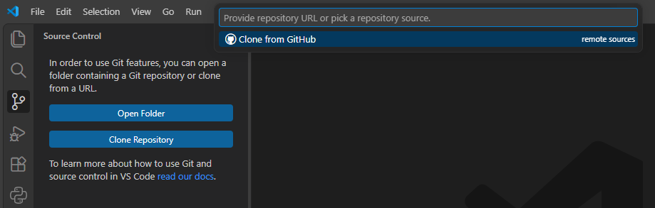
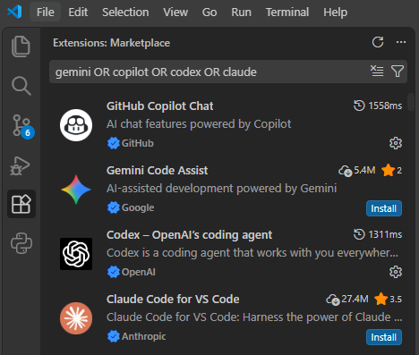
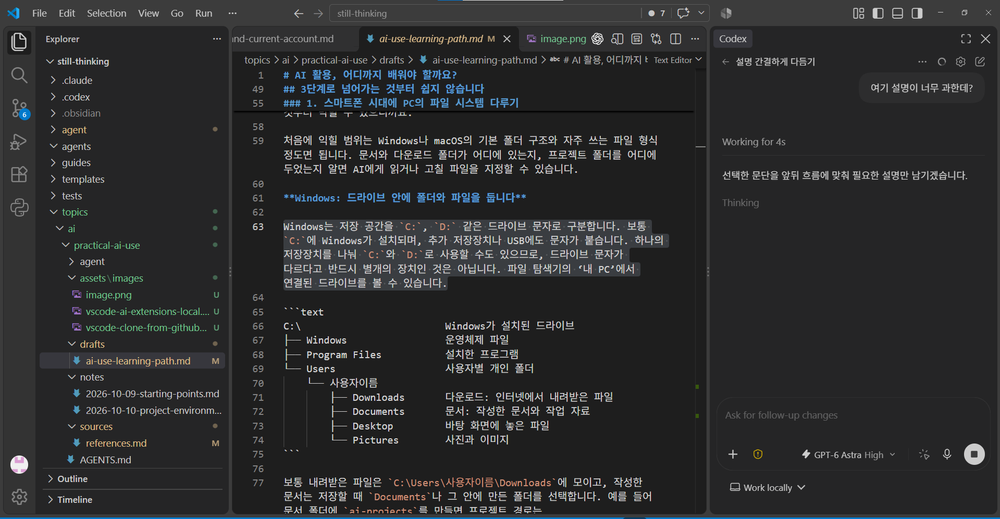

BLOG · AI 활용
AI 활용, 어디까지 배워야 할까요?
목차
AI 활용을 배운다면 내 일을 맡기고, 그 결과를 다음 작업에도 이어 쓸 수 있는 정도까지는 익혀야 합니다. 처음에는 궁금한 것을 묻거나 문서 하나를 만들어보겠지만, 계속 쓰다 보면 맡기고 싶은 일도 늘어날 테니까요.
AI 활용의 여섯 단계
AI와 함께 다룰 수 있는 일의 범위를 기준으로 나눠봤습니다.
| 단계 | 할 수 있는 일 |
|---|---|
| 1. 질문하고 답변 활용하기 | 상황과 조건을 설명하고, 답을 확인하며 필요한 정보를 얻습니다. |
| 2. 하나의 작업 완성하기 | 자료를 주고 수정을 거쳐 실제로 쓸 문서나 결과물을 만듭니다. |
| 3. 프로젝트로 축적하고 이어가기 | 목표, 자료, 지침과 진행 상태를 정리해 같은 주제의 일을 계속 이어갑니다. |
| 4. 반복 작업을 절차로 만들기 | 에이전트의 역할을 정하고, 자주 하는 일을 스킬로 만들어 재사용합니다. |
| 5. 여러 작업을 연결해 운영하기 | 수집·분석·작성·검토를 연결하고, 중간에 실패하면 고쳐서 재개합니다. |
| 6. 목표와 기준으로 작업을 위임하기 | 목표와 제약을 주고 계획 수립까지 맡기며, 계획과 결과를 검토합니다. |
1~2단계는 출발점이고, 생활과 업무에 꾸준히 활용하려면 우선 3~4단계까지 익히는 것이 좋겠습니다. 이후 여러 작업을 연결하거나 계획까지 맡길 필요가 생기면 5~6단계로 넓혀가면 됩니다.
프로젝트를 웹채팅으로 관리할 때 생기는 문제
ChatGPT, Gemini, Claude 같은 서비스의 웹채팅은 시작하기 편합니다. 그런데 여러 주제로 대화를 나누다 보면 대화 목록이 길어지고, 전에 이야기한 내용을 찾기도 어려워집니다. 이때 ChatGPT의 프로젝트 같은 기능을 쓰면 주제별로 대화와 파일을 묶고, 함께 적용할 지침도 정해둘 수 있습니다.
처음에는 이렇게 묶어두는 것만으로도 한결 편하지만, 프로젝트와 그 안의 자료가 늘어나면 다시 정리가 어려워집니다. 관련 프로젝트들을 상위 주제로 묶거나, 프로젝트 안의 파일을 폴더 트리로 나눌 수 없다면 자료가 아무리 늘어도 한곳에 모아둘 수밖에 없기 때문입니다.
예를 들어 글을 여러 편 쓰다 보면, 글쓰기 프로젝트들을 한데 묶고 각 프로젝트 안에서는 참고 원문과 조사 메모, 작성 지침, 원고를 나눠두고 싶어집니다. 그런데 폴더로 나눌 수 없는 환경에서는 파일 이름이나 대화 제목에 표시해서 구분해야 합니다. 여기에 글을 고치며 새로 정한 작성 기준을 다음 글에도 적용하려면, 여러 프로젝트에서 함께 쓸 지침을 어디에 둘지도 고민하게 됩니다.
또 원고와 지침을 여러 번 고치다 보면 일부 수정을 되돌리고 싶을 때도 있습니다. 이전 답변이 대화에 남아 있어도 어느 시점에 어떤 파일을 고쳤는지 바로 알기는 어려워서, 수정 전후를 하나씩 비교하며 되돌릴 부분과 남길 부분을 골라야 합니다.
그러다 다른 AI도 써보고 싶어지면, 이번에는 그동안 쌓인 대화와 설정이 발목을 잡습니다. 새 AI에게는 내가 원하는 말투와 작업 방식을 다시 알려줘야 합니다. 기존 AI와 나눈 대화 일부나 파일을 건네줘도 그동안 어떤 이야기를 해왔는지 충분히 알지 못하니, 처음부터 다시 설명하며 작업하는 느낌이 듭니다.
따라서 앞서 말한 3단계, 즉 자료와 작업 내용을 프로젝트로 쌓아가며 계속 이어가는 수준에 이르려면 다음 세 가지를 갖추는 방법을 배워야 합니다.
복잡한 정보를 정리할 수 있어야 합니다.
- 대화와 첨부파일에 흩어진 내용을 문서나 표처럼 용도에 맞는 파일로 정리합니다.
- 파일을 트리 구조의 폴더에 나누어 담아, 큰 주제부터 세부 내용까지 여러 계층으로 정리합니다.
작업 내용을 안전하게 관리할 수 있어야 합니다.
- Git으로 변경 내용을 확인하고 이력을 기록해, 잘못된 수정을 되돌릴 수 있도록 합니다.
- GitHub를 이용해 파일과 변경 이력을 클라우드에도 보관합니다. 내 컴퓨터가 고장 나거나 자료가 사라져도, 올려둔 내용을 다시 내려받을 수 있습니다.
특정 AI에 종속되지 않아야 합니다.
- 다른 AI도 작업을 이어갈 수 있도록 자료와 지침, 스킬, 작업 이력, 원하는 대화 스타일까지 파일로 남겨둡니다.
- 이 파일들을 함께 활용해, 사용하던 AI를 바꾸거나 여러 AI를 함께 쓸 수 있는 작업환경을 구성합니다.
3단계로 넘어가는 것부터 쉽지 않습니다
웹채팅 서비스에도 파일 작업과 프로젝트별 지침처럼 프로젝트를 이어가는 데 필요한 기능이 늘고 있습니다. 그래도 앞의 세 가지를 직접 관리하려면 PC의 파일 시스템, Git·GitHub, 나에게 맞는 에이전트 구성법까지 배워야 합니다. AI를 활용하려는 것뿐인데 준비할 것이 과해 보일 수 있고, 실제로 쉽게 익힐 수 있는 내용만 있는 것도 아닙니다.
그럼에도 이런 환경을 갖추면 프로젝트에서 다루는 주제가 다양해지고 자료가 늘어나도 AI와 함께 꾸준히 정리하며 일을 이어갈 수 있습니다. 오랫동안 진행한 프로젝트도 지난 기록을 바탕으로 무엇을 왜 결정했는지 돌아보고, 달라진 상황에 맞게 계획과 자료를 다시 정리할 수 있습니다. 이렇게 여러 작업에서 쌓은 기록을 연결해 다음 작업에 활용하면서, 프로젝트와 나의 생각을 함께 발전시켜갈 수 있습니다.
1. 스마트폰 시대에 PC의 파일 시스템 다루기
스마트폰 위주로 기기를 써왔다면 PC에서 파일을 관리하는 일부터 낯설 수 있습니다. 앱 안에서 자료를 열어보는 데는 익숙해도 드라이브, 폴더, 파일의 위치를 나타내는 경로(path)를 모르면, 내려받은 파일이 어디에 저장됐는지 찾는 것부터 막힐 수 있으니까요.
처음에 익힐 범위는 Windows나 macOS의 기본 폴더 구조와 자주 쓰는 파일 형식 정도면 됩니다. 문서와 다운로드 폴더가 어디에 있는지, 프로젝트 폴더를 어디에 두었는지 알면 AI에게 읽거나 고칠 파일을 지정할 수 있습니다.
Windows: 드라이브 안에 폴더와 파일을 둡니다
Windows는 저장 공간을 C:, D: 같은 드라이브 문자로 구분하고, 그 안에 폴더와 파일을 둡니다.
C:\ Windows가 설치된 드라이브
├── Windows 운영체제 파일
├── Program Files 설치한 프로그램
└── Users 사용자별 개인 폴더
└── 사용자이름
├── Downloads 다운로드: 인터넷에서 내려받은 파일
├── Documents 문서: 작성한 문서와 작업 자료
├── Desktop 바탕 화면에 놓은 파일
└── Pictures 사진과 이미지
보통 내려받은 파일은 C:\Users\사용자이름\Downloads에 모이고, 작성한 문서는 저장할 때 Documents나 그 안에 만든 폴더를 선택합니다. 예를 들어 문서 폴더에 ai-projects를 만들면 프로젝트 경로는 C:\Users\사용자이름\Documents\ai-projects가 됩니다.
macOS: 사용자 홈 폴더에 개인 자료를 둡니다
macOS는 C: 같은 드라이브 문자 대신 /에서 시작하는 경로를 사용합니다. 개인 자료는 보통 /Users/사용자이름에 해당하는 홈 폴더에 둡니다. Finder의 ‘이동 → 홈’에서 이 폴더를 열 수 있습니다.
/ 파일 시스템의 시작점
├── Applications 설치한 앱
├── System 운영체제 파일
├── Library 여러 사용자가 함께 쓰는 앱 지원 파일
└── Users 사용자별 홈 폴더
└── 사용자이름
├── Downloads 다운로드: 인터넷에서 내려받은 파일
├── Documents 문서: 작성한 문서와 작업 자료
├── Desktop 바탕 화면에 놓은 파일
└── Pictures 사진과 이미지
보통 내려받은 파일은 /Users/사용자이름/Downloads에 모이고, 작성한 문서는 Documents나 그 안에 만든 폴더에 보관합니다. 같은 방식으로 ai-projects를 만들면 /Users/사용자이름/Documents/ai-projects가 됩니다. 경로에서 ~는 내 홈 폴더를 뜻하므로 ~/Documents라고 줄여 쓰기도 합니다.
위 트리의 사용자이름은 각자의 계정 폴더 이름으로 바꿔 읽으면 됩니다. 화면에서는 Documents가 ‘문서’처럼 한국어로 표시될 수 있습니다. 다운로드 위치를 바꾸거나 OneDrive·iCloud의 문서 및 바탕 화면 동기화를 사용하면 실제 경로나 표시 위치가 달라질 수 있으니, AI에게 파일을 지정할 때는 현재 위치를 확인하면 됩니다.
파일 이름 끝의 .md, .pdf 같은 부분을 확장자라고 하며, 보통 파일 형식을 나타냅니다. 자주 접하는 형식은 아래 정도를 구분하면 작업을 시작하는 데 도움이 됩니다.
.md(Markdown): 지침이나 메모, 원고를 글로 정리하는 파일입니다. AI에게 작업 기준을 알려주거나, 대화에서 정한 내용과 다음에 할 일을 남겨 이후 작업에 활용합니다..txt: 글자 위주로 내용을 저장하는 일반 텍스트 파일입니다..pdf: 문서의 배치를 유지해 읽거나 인쇄하기 좋은 파일입니다. 보고서나 설명서에서 필요한 내용을 찾고 요약하도록 AI에게 참고 자료로 건넬 때 자주 씁니다..docx,.hwp,.hwpx: Word나 한글에서 작성하고 편집하는 문서 파일입니다..xlsx: Excel에서 표와 계산식, 차트 등을 다루는 스프레드시트 파일입니다. AI와 함께 가계부나 업무 현황표를 만들고, 계산식과 차트를 수정하는 데 활용합니다..csv: 표의 데이터를 쉼표로 구분해 저장하는 텍스트 파일입니다. 지출 내역이나 설문 결과를 AI에게 분석하게 하거나, 여러 프로그램 사이에서 표 데이터를 옮길 때 활용합니다..pptx: PowerPoint에서 작성하는 발표용 슬라이드 파일입니다..jpg,.png,.gif: 사진이나 그림을 저장하는 이미지 파일입니다. PNG는 투명한 배경을, GIF는 간단한 애니메이션을 담을 수 있습니다..mp3,.wav: 녹음이나 음악 등을 담는 오디오 파일입니다..mp4,.mov: 영상과 소리 등을 담는 동영상 파일입니다..zip: 여러 파일과 폴더를 묶어 압축한 파일입니다..html: 브라우저에서 열어보는 웹 문서입니다. AI에게 자료를 한눈에 볼 수 있는 보고서나 간단한 도구 화면을 만들게 한 뒤, 브라우저에서 결과를 확인할 수 있습니다..json,.yaml,.yml: 프로그램의 설정이나 구조화된 데이터를 저장할 때 쓰는 파일입니다..py: Python으로 작성한 프로그램 파일입니다. 여러 파일의 이름을 바꾸거나 표 데이터를 반복해서 정리하는 일을 자동화할 때, AI에게 만들어달라고 요청할 수 있습니다.
이 형식들은 하나의 작업에서도 함께 쓰입니다. 예를 들어 PDF 보고서의 수치를 CSV로 정리하고, 분석한 결과를 Markdown 메모로 남긴 뒤 HTML 보고서로 만들 수 있습니다. 같은 작업을 주기적으로 해야 한다면 Python 프로그램으로 반복 절차를 자동화할 수도 있습니다.
이 파일들을 직접 작성하는 데 능숙할 필요는 없습니다. AI가 만든 것이 어떤 용도의 파일이고 어디에 저장돼 있는지 이해하면, 내용을 확인하고 필요한 수정을 요청할 수 있습니다.
2. 개발자가 쓰는 Git과 GitHub 사용하기
Git은 개발자들이 소스코드의 변경 이력을 기록하고 함께 작업할 때 널리 쓰는 도구이며, GitHub는 그 저장소를 온라인에 보관하는 서비스입니다. 개인용 무료 요금제로도 공개·비공개 저장소를 사용할 수 있습니다. 많은 사람이 같은 코드를 고치는 개발 현장에서 쓰는 변경 추적과 복구 기능을, 개인의 문서와 AI 작업에도 가져다 쓰는 것입니다.
다만 여러 사람이 동시에 작업하는 상황까지 다루다 보니 기능이 많고 복잡합니다. 처음부터 전부 배우려 하면 부담스럽지만, 우선은 무엇을 하는 작업인지 이해할 수 있는 몇 가지 개념부터 익히면 됩니다.
- commit: 선택한 변경을 하나의 기록으로 남기는 것입니다.
- push: 내 컴퓨터에 기록한 변경을 GitHub 같은 원격 저장소에 올리는 것입니다.
- branch: 기존 작업과 별도로 다른 수정 방향을 진행할 수 있도록 작업 흐름을 나누는 것입니다.
이 밖에도 언제 무엇을 어떻게 바꿨는지 이력을 살펴보고, 기록해둔 과거의 파일 내용을 확인하거나, 잘못된 수정을 되돌리는 기능이 있습니다. 여러 브랜치에서 서로 다른 방향으로 시도한 뒤 필요한 변경을 다시 합칠 수도 있습니다.
이런 기능을 쓰기 위해 각각의 명령어와 옵션을 모두 배워서 외울 필요는 없습니다. AI에게 “이 문서가 언제 어떻게 바뀌었는지 보여줘”, “지난번에 기록한 내용과 비교해줘”, “방금 수정한 부분을 되돌려줘”, “다른 방향으로 고친 내용 중 이 부분을 합쳐줘”처럼 원하는 작업을 설명하고, 알맞은 명령을 골라 실행하게 할 수 있습니다.
3. 나와 함께 일할 AI 에이전트 구성하기
웹채팅 서비스는 메모리와 과거 대화 참조 기능으로 사용자의 취향과 작업 맥락을 이어가기도 합니다. 파일 기반으로 작업할 때는 필요한 맥락과 기준을 직접 관리할 수 있습니다. 원하는 말투와 지시를 처리하는 방식, 참고할 자료와 작업 범위를 파일로 정리해 AI가 작업할 때 참고하도록 합니다. 이렇게 기존 AI가 내가 정한 기준에 따라 함께 일하도록 구성하는 것이 나만의 에이전트를 만드는 일입니다.
기본 동작 지침은 AGENTS.md 같은 파일에 정리할 수 있습니다. 이후에는 사람이 직접 다루는 원고와 자료, AI가 작업하며 갱신할 진행 상황과 결정 기록을 구분하고, 어떤 파일을 언제 읽고 고칠지 알려줍니다. 반복되는 절차가 생기면 스킬로 정리해두어 같은 설명을 매번 되풀이하는 수고도 줄일 수 있습니다.
간단한 구성: 하나의 프로젝트
예를 들어 글 하나를 쓰는 프로젝트라면 다음처럼 시작할 수 있습니다. 작업 기준은 AGENTS.md에 두고, AI가 참고할 배경과 목표, 결정 기록, 진행 상황, 남은 질문은 agent/ 안에서 각각의 파일로 나눕니다. 참고 자료와 원고도 별도 폴더에 보관합니다.
blog-project/
├── AGENTS.md 말투, 작업 방식, 읽고 고칠 파일에 대한 지침
├── agent/
│ ├── context.md 글의 배경과 목표, 다룰 범위
│ ├── decisions.md 구성과 표현을 결정한 내용과 이유
│ ├── progress.md 현재 상태와 다음 작업
│ └── open-questions.md 아직 답하지 못한 질문
├── sources/
│ └── reference.pdf 참고 자료
└── drafts/
└── article.md 작성 중인 원고
이 구성은 프로젝트가 자라면서 함께 바뀝니다. 처음에는 지침과 작업 기록만 있어도 되지만, 주제가 늘면 공통 지침과 주제별 정보를 나눌 필요가 생깁니다. 다른 AI나 도구를 추가하면 같은 자료를 읽고 필요한 기록을 남길 수 있도록 연결 방식도 맞춰야 합니다. AI가 맡은 일을 어떤 기준으로 처리하는지 확인하고 그 기준을 고쳐가면서, 믿고 맡길 수 있는 범위도 넓어집니다.
확장한 구성: 여러 하위 프로젝트
학부모의 가정생활을 돕는 ‘우리집비서’라는 에이전트를 구성한다고 해봅시다. 가족의 생활 일정과 예산 기준은 함께 참고하고, 쇼핑·투자·가계부·학원은 각각 하위 프로젝트로 나누면 다음과 같은 모습이 됩니다.
우리집비서/
├── AGENTS.md 우리집비서의 공통 지침과 분야별 에이전트 사용 조건
├── 작업기록/
│ ├── 배경과목표.md 우리집비서의 역할과 관리할 범위
│ ├── 결정기록.md 가족이 정한 기준과 그 이유
│ ├── 진행상황.md 진행 중인 일과 다음에 할 일
│ └── 남은질문.md 가족과 의논하거나 확인할 질문
├── 공통자료/
│ ├── 가족정보.md 가족 구성과 생활에 필요한 정보
│ ├── 생활일정.md 가족이 함께 참고할 일정
│ └── 예산기준.md 생활비와 교육비 등의 예산 기준
├── 도구/
│ ├── 지출합산.py 지출을 월별·항목별로 합산하는 도구
│ └── 일정겹침확인.py 가족 일정과 학원 시간이 겹치는지 확인하는 도구
├── .agents/
│ ├── 쇼핑도우미.md 구매 조건에 맞춰 상품을 비교하는 역할
│ ├── 투자자료정리.md 투자 조사 자료와 기록을 정리하는 역할
│ ├── 가계부정리.md 수입과 지출을 분류하고 정리하는 역할
│ ├── 학원도우미.md 학원을 비교하고 시간표를 확인하는 역할
│ └── skills/
│ └── 지출정리/
│ └── SKILL.md 거래 내역 확인·분류·합산·가계부 갱신 절차
└── 프로젝트/
├── 쇼핑/
│ ├── AGENTS.md 상품 비교와 구매 기록의 작성 기준
│ ├── 작업기록/ 구매 목적·결정·진행 상황·질문
│ ├── 참고자료/ 상품 정보와 견적
│ └── 구매목록.md 살 물건과 구매한 물건
├── 투자/
│ ├── AGENTS.md 자료의 출처·확인 날짜와 기록 기준
│ ├── 작업기록/ 투자 목표·결정·진행 상황·질문
│ ├── 시장조사/ 시장 동향과 관심 자산의 조사 내용
│ └── 투자기록.csv 투자 내역과 보유 현황
├── 가계부/
│ ├── AGENTS.md 수입·지출 분류와 중복 내역 처리 기준
│ ├── 작업기록/ 정리 기준·결정·진행 상황·질문
│ ├── 거래내역/ 은행·카드 거래 내역과 영수증
│ └── 월별가계부.xlsx 월별 수입·지출과 예산
└── 학원/
├── AGENTS.md 학원 비교와 아이별 일정 관리 기준
├── 작업기록/ 교육 목표·결정·진행 상황·질문
├── 학원별비교/ 학원별 수업·비용·상담 내용 비교
└── 시간표.html 브라우저에서 보는 아이별 수업·이동 시간표
에이전트의 역할 문서를 .agents/에 두는 방식은 아직 여러 AI 도구에서 공통으로 따르는 표준은 아닙니다. 위의 파일과 폴더 구성도 하나의 예시입니다. 공통 지침 파일은 AGENTS.md로 두되, 나머지 폴더는 영어든 한글이든 사용자가 알아보기 편한 이름과 구조로 자유롭게 구성하면 됩니다.
그리고 프로젝트 공통 AGENTS.md에는 어떤 요청에 어떤 에이전트를 사용할지 정해둡니다. 예를 들어 “아이 학원 시간이 바뀌었는데, 다른 일정과 겹치는지 확인해줘”라고 하면 .agents/학원도우미.md의 지침을 적용한 서브에이전트를 생성해 일을 맡기도록 하는 것입니다. 이 에이전트가 학원 프로젝트의 시간표와 공통자료의 가족 일정을 함께 확인하도록 구성하면, 사용자는 필요한 일을 말하는 것만으로 여러 자료를 연결한 도움을 받을 수 있습니다.
PC의 파일 관리, Git·GitHub, 에이전트 구성의 기본 개념과 필요한 이유를 이해했다면, 구체적인 방법은 AI에게 물어가며 배울 수 있습니다. 하려는 일과 현재 환경을 설명하고, 제안받은 방법에서 낯선 개념이나 무엇이 바뀌는지를 확인해가면 됩니다. 어떤 자료를 관리하고 무엇을 계속 기억해야 하며 어디까지 맡기려는지는 사람이 정하되, 그에 맞는 작업환경을 구성하는 일은 AI와 의논하며 진행할 수 있습니다.
GitHub과 VS Code로 첫 프로젝트 시작하기
먼저 GitHub에 프로젝트를 보관할 저장소를 만들고, 이를 내 컴퓨터로 가져와 VS Code에서 작업하는 순서로 시작해봅니다.
1. GitHub 가입하기
GitHub의 무료 개인 계정으로도 비공개 저장소를 만들 수 있습니다. 이미 계정이 있다면 로그인한 뒤 다음 단계로 넘어가면 됩니다.
- GitHub 가입 화면을 엽니다.
- 화면 안내에 따라 이메일 주소, 비밀번호, 사용자 이름을 입력해 개인 계정을 만듭니다. 사용자 이름은 나중에 저장소 주소에도 들어갑니다.
- 이메일로 받은 안내에 따라 이메일 주소 인증을 완료합니다. 저장소를 만들려면 이메일 인증이 필요합니다.
2. 비공개 저장소 만들기
저장소(repository)는 프로젝트의 파일과 변경 이력을 함께 보관하는 공간입니다. ‘우리집비서’처럼 개인 생활 자료를 다룰 프로젝트는 Private(비공개)으로 만듭니다. 개인 계정의 비공개 저장소는 본인과 접근 권한을 준 사람만 볼 수 있습니다.
로그인한 상태에서 오른쪽 위의 + → New repository를 누릅니다. 새 저장소 만들기 화면으로 바로 들어가도 됩니다. 다음과 같이 설정합니다.
| 항목 | 설정할 내용 |
|---|---|
| Owner | 본인의 개인 계정을 선택합니다. |
| Repository name | home-assistant처럼 저장소 이름을 입력합니다. |
| Description | 우리집비서 — 쇼핑과 가정생활 관리처럼 간단한 설명을 적습니다. 생략해도 됩니다. |
| Visibility | Private을 선택합니다. Public은 인터넷에 공개하는 설정입니다. |
| Add README | 켭니다. 프로젝트를 소개할 README.md 파일이 만들어집니다. |
| Add .gitignore / Add license | 이번 실습에서는 선택하지 않고 둡니다. |
GitHub 저장소 이름에는 한글이나 공백을 쓸 수 없으므로 영문·숫자와 -, _ 등을 사용합니다. 저장소 안의 폴더와 파일은 앞의 예시처럼 한글로 이름을 붙여도 됩니다.
Create repository를 누르면 저장소가 만들어집니다. 저장소 이름 옆에 Private이 표시되는지, 파일 목록에 README.md가 있는지 확인합니다. 이 저장소를 내 컴퓨터로 복제(clone)하면 파일과 변경 이력을 가져와 작업을 시작할 수 있습니다.
3. VS Code 설치하기
현재 시점에서 이런 프로젝트 작업을 익히기에는 VS Code에 Codex나 Claude Code 확장을 설치해 사용하는 방식이 적합합니다. 앞에서 설명한 폴더와 파일, 에이전트 지침, Git을 한곳에서 살펴보며 작업할 수 있기 때문입니다.
VS Code에서 프로젝트 폴더를 열면 왼쪽 탐색기에 폴더와 파일이 트리로 표시됩니다. 여기서 Markdown 파일을 열어 내용을 읽거나 고치고, 여러 문서를 나란히 놓고 비교할 수 있습니다. AI가 지침과 작업 기록을 만들어주었을 때도 무엇이 어디에 저장됐는지 바로 확인할 수 있어, 처음 에이전트를 구성하고 다듬는 과정에 편리합니다.
여기에 Codex나 Claude Code 확장을 설치하면 문서를 보면서 AI와 대화할 수 있습니다. 열어둔 파일이나 선택한 부분을 대화의 맥락으로 전달할 수 있으므로, 문장을 선택하고 “이 부분을 좀 더 쉽게 풀어줘”라고 요청하는 식으로 작업할 수 있습니다. 선택 영역이 대화에 포함됐는지는 확장의 표시로 확인하면 됩니다. 수정한 뒤에는 Git과 연동된 변경 비교 화면에서 무엇이 달라졌는지 살펴보고 커밋할 수 있습니다.
또한 VS Code는 프로그램 개발에 쓰는 편집기라서, 작업이 늘어났을 때 스크립트나 스킬을 만들고 고치기에도 좋습니다. 내장 터미널에서 필요한 명령이나 스크립트를 실행하고 결과를 확인할 수 있으니, 문서를 정리하다가 반복 작업을 자동화하는 단계로 넘어가도 같은 환경을 계속 사용할 수 있습니다.
Codex 앱이나 Claude의 데스크톱 작업 기능도 프로젝트를 다루는 데 활용할 수 있습니다. 다만 프로젝트의 폴더를 펼쳐보고 여러 파일을 오가며 내용을 직접 검토하는 데는 VS Code가 더 편리합니다. 특히 초반에는 AI가 어떤 지침을 따르고 어느 파일에 무엇을 남기는지 눈으로 살펴볼 일이 많아, 이런 편집 환경의 장점이 큽니다.
VS Code 설치
VS Code 다운로드 화면에서 사용하는 운영체제에 맞는 설치 파일을 받습니다.
- Windows: User Installer를 내려받아 실행하고 안내에 따라 설치합니다. 설치가 끝나면 시작 메뉴에서 Visual Studio Code를 엽니다.
- macOS: 내려받은 설치 파일을 열고
Visual Studio Code.app을 응용 프로그램(Applications) 폴더로 옮깁니다. 이후 응용 프로그램 폴더에서 실행합니다.
4. GitHub 저장소를 내 컴퓨터로 복제하기
앞에서 만든 비공개 저장소를 VS Code에서 찾아 복제해봅니다.

- VS Code 왼쪽 세로 메뉴에서 가지가 갈라지는 모양의 Source Control(소스 제어) 버튼을 누릅니다. Git이 설치되어 있지 않다는 안내가 나오면 안내에 따라 설치한 뒤 VS Code를 다시 엽니다.
- Clone Repository(리포지토리 복제)를 누른 뒤, Clone from GitHub를 선택합니다.
- GitHub 로그인 안내가 나오면 브라우저에서 앞서 저장소를 만든 계정으로 로그인하고 VS Code 연결을 승인합니다. 브라우저에서 VS Code로 돌아갈지 물으면 열기를 선택합니다.
- 저장소 목록에서
사용자이름/home-assistant를 찾아 선택합니다. 비공개 저장소가 보이지 않으면 로그인한 계정과 저장소 이름을 확인합니다. - 내 컴퓨터에서 프로젝트를 보관할 상위 폴더를 선택합니다. 예를 들어 문서 폴더 안에
ai-projects를 만들어 선택하면, 그 안에home-assistant폴더가 자동으로 생깁니다. - 복제가 끝나면 Open을 눌러 엽니다. 폴더의 작성자를 신뢰할지 묻는 창이 나오면 방금 본인이 만든 저장소인지 확인하고 신뢰를 선택합니다.
왼쪽 탐색기에 home-assistant 폴더와 README.md가 보이면 복제가 완료된 것입니다. 이제 이 폴더에서 파일을 만들거나 수정하면 됩니다. 복제할 때 GitHub 저장소와의 연결도 함께 설정되므로, 나중에 변경 내용을 커밋하고 푸시해 같은 저장소에 올릴 수 있습니다.
5. 사용할 AI의 공식 확장 설치하기
복제한 프로젝트를 연 상태에서 왼쪽 Extensions(확장) 버튼을 누릅니다. 검색창에 본인이 사용할 AI의 확장 이름을 입력하고, 아래 발행처가 맞는지 확인한 뒤 Install(설치)을 누릅니다.
| 사용할 AI | 검색할 공식 확장 이름 | 발행처 |
|---|---|---|
| Codex | Codex - OpenAI's coding agent | OpenAI |
| Claude | Claude Code for VS Code | Anthropic |
| Gemini | Gemini Code Assist | |
| GitHub Copilot | GitHub Copilot Chat | GitHub |

VS Code의 기본 AI인 GitHub Copilot을 사용해도 됩니다. 사용할 확장을 설치하고, 해당 확장을 열어 화면 안내에 따라 계정에 로그인합니다.
AI 채팅 창은 보통 오른쪽에 표시됩니다. Chat 창이 보이지 않으면 상단 메뉴의 View(보기) → Chat(채팅)을 선택합니다. 버전에 따라 상단 Chat → Open Chat으로 열 수도 있습니다.
이때 상단의 Chat 메뉴로 여는 탭은 GitHub Copilot과 다른 지원 AI를 함께 사용할 수 있는 통합 채팅 탭입니다. 이번 실습에서 Codex나 Claude Code를 사용한다면, 설치한 확장의 전용 채팅 탭을 열어 작업합니다.
- Codex: Codex 아이콘을 누릅니다. 아이콘이 보이지 않으면 명령 팔레트에서
Codex: Open Codex Sidebar를 실행합니다. - Claude Code: 파일을 연 뒤 편집기 오른쪽 위의 Claude Code 아이콘을 누릅니다. 명령 팔레트에서
Claude Code를 검색해Open in New Tab을 선택해도 됩니다. - Gemini Code Assist: 왼쪽 세로 메뉴에서 Gemini Code Assist 아이콘을 눌러 전용 채팅 창을 엽니다.
- GitHub Copilot: 통합 Chat 탭에서 대화합니다.
명령 팔레트는 Windows에서 Ctrl+Shift+P, macOS에서 Cmd+Shift+P로 엽니다.
6. AI와 첫 작업 시작하기
첫 실습은 앞의 ‘우리집비서’에서 쇼핑 한 가지부터 시작해볼 수 있습니다. 복제한 프로젝트를 연 상태에서 선택한 AI의 채팅 탭에 다음처럼 요청해봅니다.
우리집에서 살 물건을 정리하는 프로젝트를 만들고 싶어. 구매목록과 상품을 비교할 기준을 Markdown 파일로 관리하고, 다음 대화에서도 이어서 작업할 수 있게 해줘. 먼저 나에게 필요한 내용을 물어보고, 그 답을 바탕으로 작업 지침과 기록 파일을 만들어줘.
프로젝트를 만들면서 AI와 일하는 방식도 정해두면 좋습니다. 아래 예시에서 필요한 항목을 골라 “이 내용을 프로젝트의 공통 지침인 AGENTS.md에 반영해줘”라고 요청해봅니다. 처음부터 모든 지침을 갖출 필요는 없고, 작업하다가 불편했던 점을 하나씩 추가하면 됩니다.
대화에서 정한 기준을 지침과 문서에 반영하기
대화 중 내가 내린 지시나 수정 요청에서 앞으로도 적용할 기준이 생기면, 별도로 기록해 달라고 하지 않아도 에이전트 지침과 관련 문서를 업데이트해줘. 프로젝트 전체에 적용할 기준과 특정 작업에만 적용할 내용을 구분하고, 이번 한 번만 요청한 일을 영구적인 규칙으로 만들지는 마. 네가 제안했지만 내가 아직 선택하지 않은 내용은 제안으로 남겨줘.
새 대화에서도 작업 이어가기
작업을 시작할 때 프로젝트 지침과 최근 작업 기록을 읽고 현재 상태를 파악해줘. 작업을 마칠 때는 결정한 내용, 끝낸 일, 남은 일과 다음에 할 일을 관련 기록에 갱신해줘. 새 대화에서 “이어서 하자”라고 하면 이 기록을 바탕으로 진행해줘.
확인한 작업을 커밋하고 푸시하기
작업 하나를 완료하면 바뀐 파일과 내용을 보여줘. 내가 확인하고 저장해달라고 하면 이번 작업에 해당하는 파일만 커밋한 뒤 연결된 GitHub 저장소에 푸시해줘. 커밋 메시지는 무엇을 바꿨는지 알 수 있게 한국어로 작성하고, 작업 전에 이미 있던 다른 변경을 임의로 섞거나 비밀번호·인증키 같은 비밀정보를 포함하지 마. 끝나면 커밋과 푸시의 성공 여부를 알려주고, 실패했다면 어느 단계에서 멈췄는지 설명해줘.
필요한 프로그램과 권한 요청하기
내가 지시한 일을 더 효과적으로 처리할 수 있는 프로그램이나 도구가 있으면, 현재 환경에서 쓸 수 있는지 먼저 확인해줘. 추가 설치나 접근 권한이 필요하면 무엇을 위해 필요한지, 설치하거나 허용하면 어떤 작업을 할 수 있는지 설명하고 요청해줘. 비용이 들거나 외부 서비스에 자료를 보내야 한다면 그 내용도 함께 알려줘. 내가 승인하면 가능한 설정은 직접 진행하고, 로그인처럼 내가 해야 하는 조작은 순서대로 안내해줘.
필요한 질문을 하고 나머지는 진행하기
목적이나 결과를 크게 바꾸는 정보가 부족하면 먼저 물어봐줘. 질문은 내가 판단하기 쉬운 말로 설명하고, 선택지가 있다면 추천하는 방법과 이유도 알려줘. 이미 정한 범위 안에서 사소하고 쉽게 되돌릴 수 있는 선택은 직접 판단해 진행하고, 끝나면 무엇을 바꿨는지와 결과를 어디서 확인할 수 있는지 간단히 설명해줘.
기존 자료와 원문 보존하기
파일을 수정하기 전에 기존 내용과 내가 직접 바꾼 부분을 확인하고, 요청과 관계없는 내용을 덮어쓰지 마. 참고 자료의 원문은 보존하고 요약이나 해석은 별도 문서에 정리해줘. 자료를 삭제하거나 기존 내용을 대체해야 한다면, 바뀌는 범위와 되돌릴 방법을 먼저 설명해줘.
만들어진 Markdown(.md) 파일을 열어 내용을 읽고, 마음에 들지 않는 문장을 선택해 고쳐봅니다. 확장의 대화 입력란에서 IDE context처럼 열어둔 파일과 선택 영역을 AI에게 전달하는 기능이 활성화되어 있다면, 수정할 문장을 드래그해 선택한 뒤 채팅에 “여기 설명이 너무 과한데?”처럼 짧게 요청할 수 있습니다. 문장을 복사해 붙여 넣거나 어느 파일의 어느 부분인지 매번 설명할 필요가 없습니다. 기능 이름과 표시 방식은 확장마다 다르므로, 선택한 내용이 대화에 포함되는지는 입력란의 표시로 확인합니다.

살 물건을 추가하거나 예산을 바꾸면서 구매목록과 작업 지침이 어떻게 달라지는지도 살펴봅니다.
7. 작업을 GitHub에 올리고 확인하기
만든 파일을 열어보고 고칠 점이 있으면 AI에게 다시 요청합니다. 결과가 마음에 들면 VS Code의 Source Control(소스 제어)에서 바뀐 내용을 확인합니다. 이번 작업에 해당하는 파일 옆의 +를 눌러 커밋할 파일을 고른 뒤, 변경 내용을 적고 Commit(커밋)을 누릅니다. 이어서 소스 제어 메뉴의 Push(푸시)로 GitHub에 올립니다. Git 조작이 낯설다면 AI에게 “이번 작업에서 바뀐 파일을 보여줘. 내가 확인한 뒤 저장해달라고 하면 커밋하고 푸시해줘”라고 요청해도 됩니다.
GitHub 웹사이트에서 home-assistant 저장소를 다시 열어, 방금 올린 파일과 커밋 메시지가 보이는지 확인합니다. 보이지 않는다면 같은 저장소와 브랜치를 보고 있는지, 푸시가 성공했는지 살펴봅니다.
다른 AI와 앱으로도 작업 이어가기
지침과 자료, AI와 만든 결과물을 프로젝트 파일로 남겨두면 VS Code를 떠나도 작업을 이어갈 수 있습니다. Codex나 Claude 앱에서 같은 폴더를 열어 AI와 작업하고, Orca나 IntelliJ에서 저장소의 파일을 다룰 수도 있습니다. 터미널에서 파일을 처리하거나 파일 탐색기에서 찾아 메모장으로 간단히 고칠 수도 있습니다.
또한 작업한 내용을 GitHub에 올려두면 여러 컴퓨터에서도 이어서 작업할 수 있습니다. 다른 컴퓨터에서는 처음 한 번 저장소를 복제(clone)하고, 이후에는 작업을 시작하기 전에 최신 내용을 가져와(pull) 동기화하면 됩니다. 컴퓨터가 고장 나거나 파일을 잃어버려도 GitHub에 올려둔 자료와 변경 이력은 남아 있으므로, 다시 내려받아 작업을 계속할 수 있습니다.